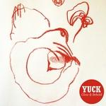
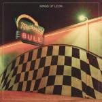

Music Reviews
-
HAIM Days Are Gone
After nearly a year of hype, what's left of the debut album by the trio of Californian sisters is finally here.
Forrest Cardamenis reminisces... -

Sons of the Sea Sons of the Sea
Brandon Boyd has used the Incubus hiatus to discover another way to celebrate his vivid enterprise. With the help of long-time collaborator Brendan O'Brien, Sons of the Sea has announced itself as a different kind of pop music, awash with high spirits and playful, stomping imagination.
Carl Purvis is remembering himself... -

Oneohtrix Point Never R Plus Seven
For over 5 years now, Oneohtrix Point Never has successfully endeavored into the great digital void and brought forth some of the most bizarre sounds that have ever been stuck together in a coherent sequence. But does his latest record hold up similarly?
Andrew Ciraulo reviews... -
Justin Timberlake The 20/20 Experience - 2 of 2
While Justin Timberlake's unnecessary 2nd half to the already rather complete 20/20 Experience has a few catchy moments, it's hard not to see why JT may have left these songs off the first record in the first place.
Peter Quinton feeds further into the "JT's year of domination" with this review... -
Moby Innocents
Following relocation to L.A. from New York, Moby releases his 11th studio album, a mixture of wide-ranging collaborations and solo material that takes its place amongst the better Moby efforts.
Graeme Marsh reviews... -

Yuck Glow & Behold
Yuck have returned minus their frontman, and have internally promoted their guitarist to take on his duties. Surely if they were to change anything, it should have been their name?
Carl Purvis wanted more fuzz... -
Touché Amoré Is Survived By
Touché Amoré's emotional nakedness may come off a bit too strong for most, but the triumphant, celebratory highs the post hardcore act reaches through such harrowing lows on their new album make it one of the year's most exhilarating listens.
Peter Quinton is survived by this review of Is Survived By... -

Kings of Leon Mechanical Bull
The Nashville-bred foursome's sixth release finds them trying to capture their essence as a unit, handpicking the finer points of their body of work and repackaging them with a polished, sleeker sound.
Juan Edgardo Rodríguez reviews... -
Placebo Loud Like Love
Placebo are back with their 7th studio LP, and although the blueprint is the same as it always was, it's one that's become too fabricated, too polished, and devoid of ideas.
Carl Purvis reviews... -
The Weeknd Kiss Land
After the triple whammy of 2011's mix-tapes, can Toronto's resident Casanova still impress with his debut album proper, despite his penchant for some very dodgy lyrical content?
Mark Davison listened to it (a lot) and now needs a good long shower...